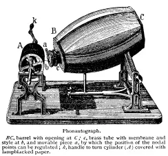
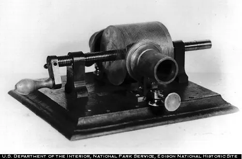
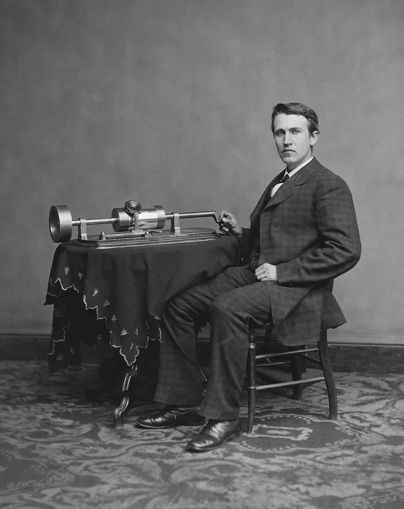
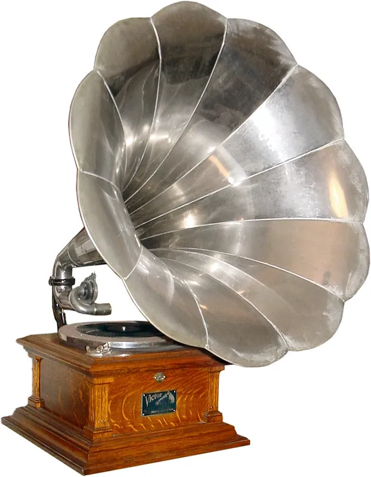
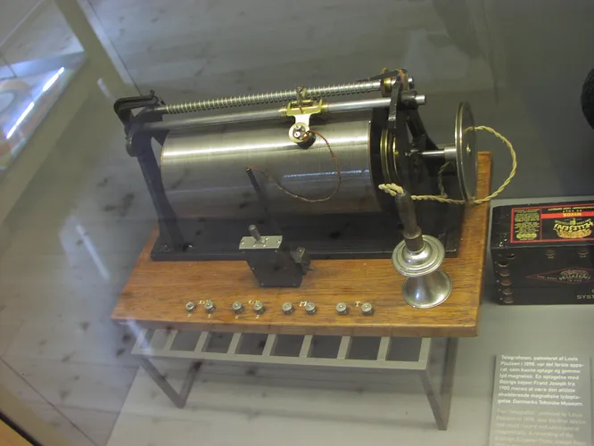
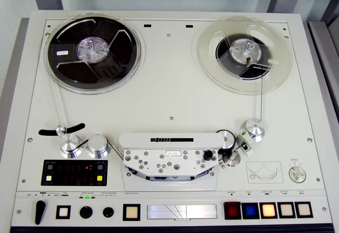

История звукозаписи
Первые попытки - Эдуард-Леон Скотт де Мартинвиль Француз Леон Скотт де Мартинвиль изобрел свой «фонавтограф», запатентовав разработку 25 марта 1857 года
Палеофон Шарль Кро Париж явно был центром мира на заре звукозаписи. Там 20 лет после Мартинвиля другой француз Шарль Кро изобрел палеофон (греч. - «звук прошлого»)
Фонограф Томаса Эдисона Но Шарля Кро опередил изобретатель Томас Эдисон, живущий за тысячи миль в США. Эдисон работал над похожим устройством и в конце 1877 года построил машину, записывающую и воспроизводящую звук, которую он назвал фонографом.
Графофон и Граммофон? В1880-е Чарльз Самнер Тейнтер и Чичестер Белл, работавшие под руководством Александра Грэма Белла в его лаборатории Volta, усовершенствовали цилиндр фонографа, разработали покрытые воском картонные цилиндры и, в конечном счете, создали новую форму записывающей машины: графофон. Основываясь на этих цилиндрах, Берлинер изменил методологию в 1888 году, чтобы использовать диски с отпечатанными канавками на плоской стороне диска, а не на внешней стороне цилиндра. Первоначально он предполагал, что его изобретение будет игрушкой.
Телеграфон и патефон Американский инженер Оберлин Смит, ознакомившись с изобретением Эдисона, начинает изучать широту возможностей звукозаписи. Датскийинженер Вальдемар Поульсен после череды опытов создает «телеграфон»: в качестве носителя использовалась металлическая стальная проволка. Так, начинается история магнитной звукозаписи.
Первые электрические записи сделаны учеными Bell Laboratories в США около 1920 года. Главная их заслуга — это использование микрофонов, которые, кстати, по размерам были схожи с современными в смартфонах. Изобретение электрической записи позволило всем крупным лейблам начать использовать микрофоны на студийных сессиях. В 1928 году Фриц Пфлеймер разрабатывает магнитные ленты для звукозаписи. В 1927 году, после экспериментов с различными материалами, Пфлеймер покрыл тонкую бумагу порошком оксида железа, используя лак в качестве клея. Годом позже он получил патент на запись на магнитную ленту, а 1 декабря 1932 года он предоставил право использовать свое изобретение при создании первого в мире практического магнитофона.
